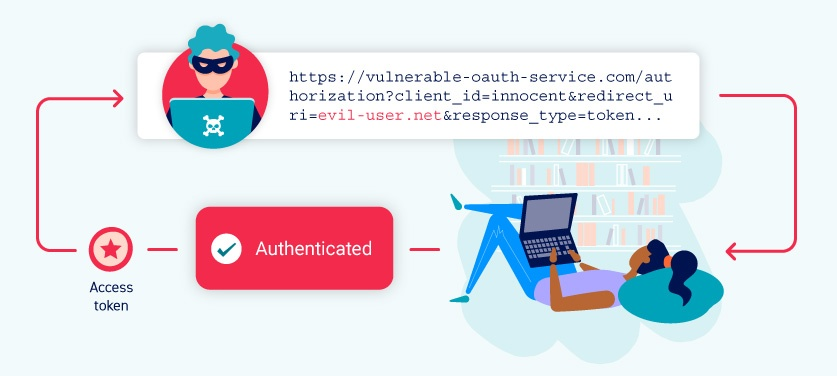
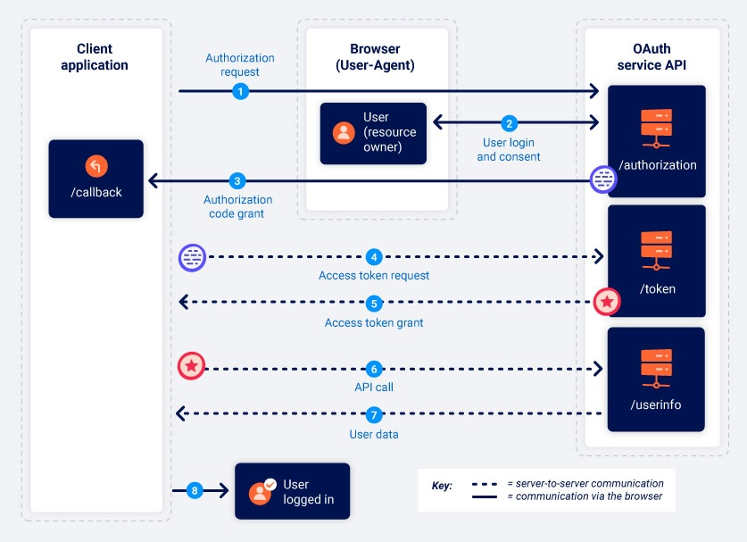

BSCP PRACTICIONER Lab 2: OAuth account hijacking via redirect_uri¶
TBD LAB¶
- Link: https://portswigger.net/web-security/oauth/lab-oauth-account-hijacking-via-redirect-uri
- No estaba andando el lab
Estudiando OAuth 2.0¶
- Mientras navegas por la web, es casi seguro que te has encontrado con sitios que te permiten iniciar sesión usando tu cuenta de redes sociales. Lo más probable es que esta función esté construida utilizando el popular marco de trabajo OAuth 2.0. OAuth 2.0 es altamente interesante para los atacantes porque es extremadamente común y propenso a errores de implementación. Esto puede resultar en una serie de vulnerabilidades, permitiendo a los atacantes obtener datos sensibles de los usuarios y, potencialmente, eludir la autenticación por completo.

¿Que es OAuth?¶
- OAuth es un marco de autorización comúnmente utilizado que permite a los sitios web y aplicaciones solicitar acceso limitado a la cuenta de un usuario en otra aplicación. Lo crucial de OAuth es que permite al usuario otorgar este acceso sin exponer sus credenciales de inicio de sesión a la aplicación solicitante. Esto significa que los usuarios pueden ajustar qué datos desean compartir en lugar de tener que ceder el control total de su cuenta a un tercero.
- El proceso básico de OAuth se utiliza ampliamente para integrar funcionalidades de terceros que requieren acceso a ciertos datos de la cuenta de un usuario. Por ejemplo, una aplicación podría usar OAuth para solicitar acceso a tu lista de contactos de correo electrónico con el fin de sugerir personas con las que conectarte. Sin embargo, el mismo mecanismo también se utiliza para proporcionar servicios de autenticación de terceros, permitiendo a los usuarios iniciar sesión con una cuenta que tienen en otro sitio web.
Como funciona¶
- OAuth 2.0 se desarrolló originalmente como una forma de compartir acceso a datos específicos entre aplicaciones.
-
Funciona definiendo una serie de interacciones entre tres partes distintas, a saber, una aplicación cliente, un propietario de recursos y el proveedor de servicios OAuth.
-
Aplicación cliente: El sitio web o aplicación web que desea acceder a los datos del usuario.
- Propietario de recursos: El usuario cuyos datos la aplicación cliente desea acceder.
- Proveedor de servicios OAuth: El sitio web o aplicación que controla los datos del usuario y el acceso a ellos. Soportan OAuth proporcionando una API para interactuar tanto con un servidor de autorización como con un servidor de recursos.
Existen numerosas formas diferentes en las que se puede implementar el proceso de OAuth. Estas se conocen como "flujos" o "tipos de concesión" de OAuth. En este tema, nos centraremos en los tipos de concesión "código de autorización" e "implícito", ya que son, con mucho, los más comunes. En términos generales, ambos tipos de concesión implican las siguientes etapas:
- La aplicación cliente solicita acceso a un subconjunto de los datos del usuario, especificando qué tipo de concesión desea usar y qué tipo de acceso necesita.
- Se solicita al usuario que inicie sesión en el servicio OAuth y otorgue explícitamente su consentimiento para el acceso solicitado.
- La aplicación cliente recibe un token de acceso único que demuestra que tiene permiso del usuario para acceder a los datos solicitados. La forma exacta en que esto ocurre varía significativamente según el tipo de concesión.
- La aplicación cliente utiliza este token de acceso para realizar llamadas a la API y obtener los datos relevantes del servidor de recursos.
OAuth grant types¶
El tipo de concesión de OAuth determina la secuencia exacta de pasos que están involucrados en el proceso de OAuth. El tipo de concesión también afecta cómo la aplicación cliente se comunica con el servicio OAuth en cada etapa, incluyendo cómo se envía el propio token de acceso. Por esta razón, los tipos de concesión a menudo se denominan "flujos de OAuth".
Un servicio OAuth debe estar configurado para admitir un tipo de concesión específico antes de que una aplicación cliente pueda iniciar el flujo correspondiente. La aplicación cliente especifica qué tipo de concesión desea usar en la solicitud de autorización inicial que envía al servicio OAuth.
Existen varios tipos de concesión diferentes, cada uno con distintos niveles de complejidad y consideraciones de seguridad. Nos centraremos en los tipos de concesión "código de autorización" e "implícito", ya que son, con mucho, los más comunes.
OAuth Scopes¶
Para cualquier tipo de concesión de OAuth, la aplicación cliente debe especificar qué datos desea acceder y qué tipo de operaciones desea realizar. Esto se hace utilizando el parámetro scope en la solicitud de autorización que envía al servicio OAuth.
Para el OAuth básico, los alcances (scopes) a los que una aplicación cliente puede solicitar acceso son únicos para cada servicio OAuth. Dado que el nombre del alcance es simplemente una cadena de texto arbitraria, el formato puede variar drásticamente entre los proveedores. Algunos incluso utilizan un URI completo como nombre del alcance, similar a un endpoint de una API REST. Por ejemplo, al solicitar acceso de solo lectura a la lista de contactos de un usuario, el nombre del alcance podría tomar cualquiera de las siguientes formas dependiendo del servicio OAuth que se esté utilizando:
scope=contacts
scope=contacts.read
scope=contact-list-r
scope=https://oauth-authorization-server.com/auth/scopes/user/contacts.readonly
Cuando OAuth se utiliza para autenticación, sin embargo, a menudo se emplean los alcances estandarizados de OpenID Connect.
Por ejemplo, el alcance openid profile otorgará a la aplicación cliente acceso de solo lectura a un conjunto predefinido de información básica sobre el usuario, como su dirección de correo electrónico, nombre de usuario, entre otros. Hablaremos más sobre OpenID Connect más adelante.
Authorization code grant type¶
El tipo de concesión de código de autorización inicialmente parece bastante complicado, pero en realidad es más simple de lo que piensas una vez que te familiarizas con algunos conceptos básicos.
En resumen, la aplicación cliente y el servicio OAuth primero utilizan redirecciones para intercambiar una serie de solicitudes HTTP basadas en el navegador que inician el flujo. Se le pide al usuario que consienta el acceso solicitado. Si acepta, a la aplicación cliente se le otorga un "código de autorización". La aplicación cliente luego intercambia este código con el servicio OAuth para recibir un "token de acceso", que puede usar para realizar llamadas a la API y obtener los datos relevantes del usuario.
Toda la comunicación que ocurre desde el intercambio de código/token en adelante se envía de servidor a servidor a través de un canal seguro y preconfigurado, y, por lo tanto, es invisible para el usuario final. Este canal seguro se establece cuando la aplicación cliente se registra por primera vez con el servicio OAuth. En este momento, también se genera un client_secret, que la aplicación cliente debe usar para autenticarse al enviar estas solicitudes de servidor a servidor.
Dado que los datos más sensibles (el token de acceso y los datos del usuario) no se envían a través del navegador, este tipo de concesión es, posiblemente, el más seguro. Las aplicaciones del lado del servidor deberían idealmente usar siempre este tipo de concesión si es posible.
